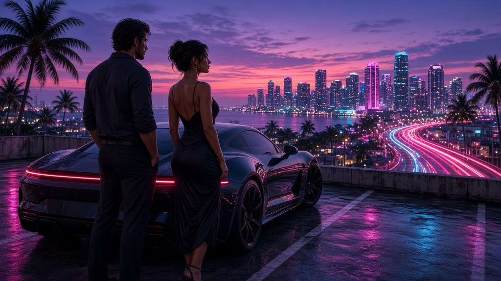

Today's news
Can You Replay Missions in GTA 6? | Peekhole

Short answer: Not the easy way. GTA 6 has no mission replay menu like GTA 5 and Red Dead Redemption 2 had. The workaround is to reload an older save from before the mission.
Why did Rockstar leave it out?
Senior design director Scott Butchard told Kotaku the team "certainly" considered mission replay early on. As the game came together, he said, it felt at odds with the story and "a bit alien and disconnected." GameSpot, which covered the interview on November 25, 2026, adds that he felt replaying missions diminished the choices players made. With reports of multiple endings, that tracks: letting you redo a big decision on demand would take the sting out of it.
So how do I replay a mission?
- Reload an earlier save. Keep a few manual saves in different slots so you have a point to jump back to.
- Mid-mission? Open the game menu and pick retry, restart or quit if things go sideways.
Will Rockstar add it later?
Rockstar hasn't said. We'd file it under "don't hold your breath" based on Butchard's comments, and we'll update this if anything changes.
Sources
Peekhole take: No do-overs in Leonida. Like a bad date, you live with it, or you quietly load an old save and pretend it never happened.